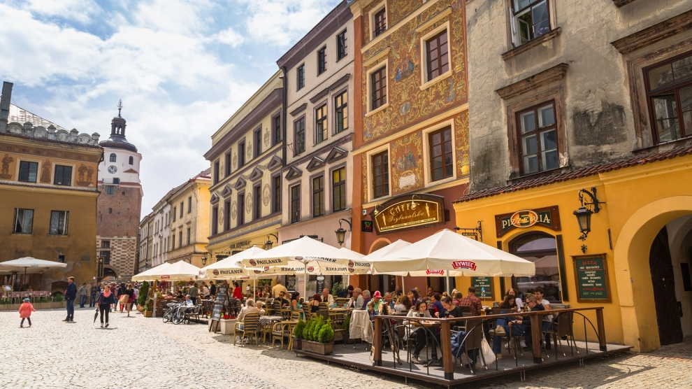
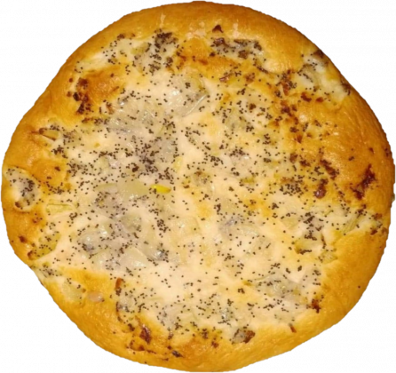
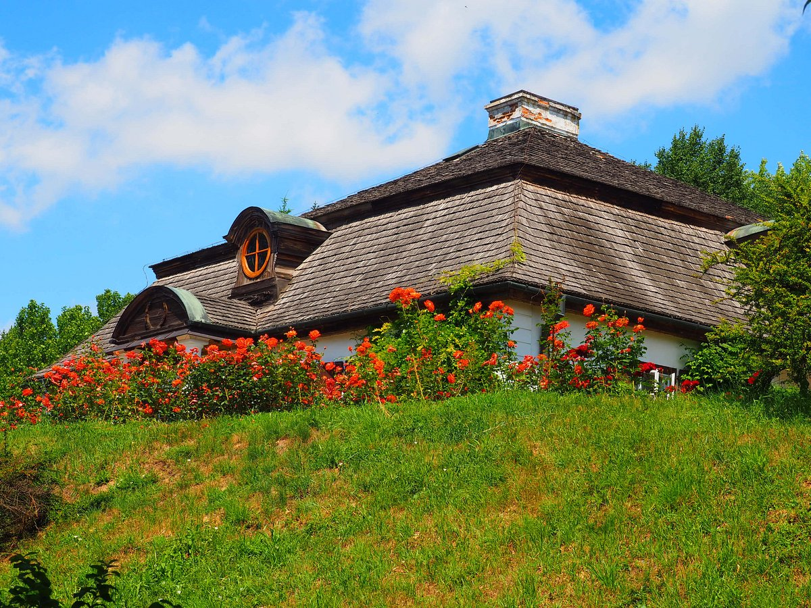

Welcome to Lublin - a beautiful, vibrant city in the Eastern Poland. 🤩
Top 3 activities I recommend
Old town
A Lublin Old Town is a really good place for evening walks. I recommend you to view a Lublin Castle where you can rise to a Castle Tower and enjoy a panorama of a Castle Square.
Local cuisine
A traditional dish in Lublin is called "cebularz". It`s a wheat dough pancake with an onion and a poppy seeds on top. It`s pretty tasty if you like the onion, of course.
Village Museum
Set in 60 acres of picturesque land it is one of the largest open air museums in Poland. The area is composed of several parts reflecting particular geographical units of Lublin region.